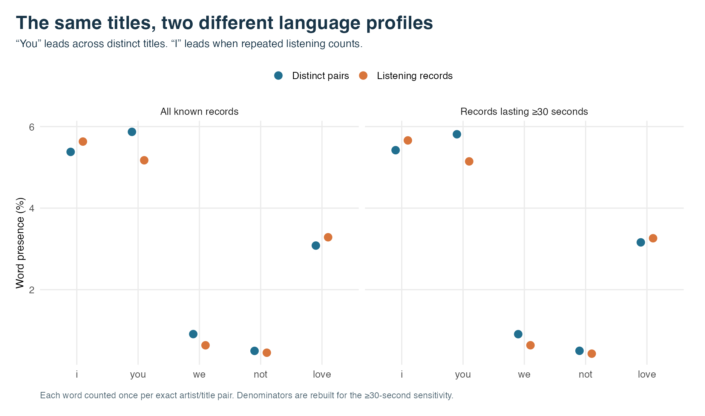

01 Music / Language / Data
Spotify Title Lab
Music is a big part of my life, and I listen pretty much nonstop throughout the day. I used my own Spotify data as a mental jungle gym, testing different ways to reshape it and see what I could learn.
A personal exploration of song-title language, repetition, and changing listening patterns. Titles are not lyrics, and these results do not classify mood.
